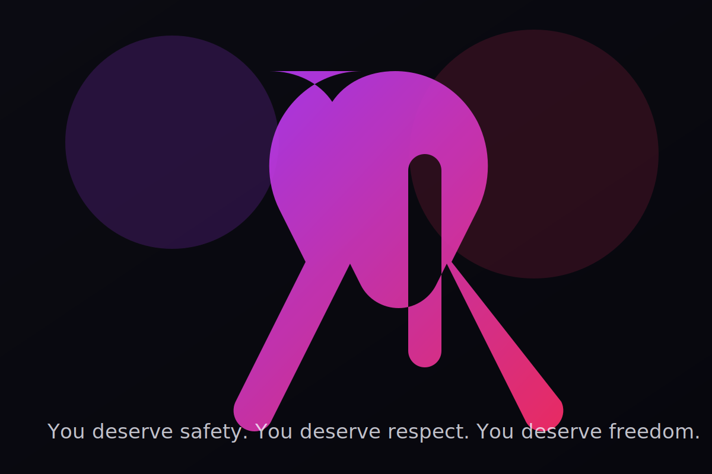

Domestic Violence Awareness
Safety isn’t a privilege. It’s a right.
Domestic violence can be physical, emotional, financial, sexual, digital, or psychological. It thrives in silence — and collapses when we name it, learn the signs, and build support.
Privacy tip: Use the Quick Exit button in the top-right to leave this site fast.

A bold reminder: strength is not staying — strength is choosing safety.
Recognize
Patterns, not “bad days”
Abuse is about power and control. Look for repeated behaviors that isolate, intimidate, or dominate.
Respond
Believe and support
Listen without judgment. Offer options, not orders. Safety planning beats “just leave.”
Rebuild
Healing is possible
Support networks, counseling, and community resources can help people recover and thrive.
Quick safety-plan checklist
This is a general checklist for learning. If you need immediate help, use local emergency services.
Status: